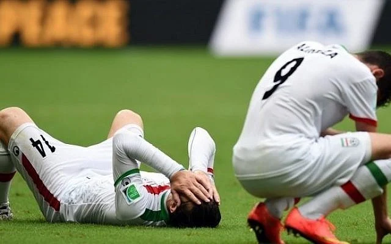

The Final Eight.
If Week 4 of the 2026 World Cup taught us anything, it’s this: nobody is leaving quietly. The knockout rounds have arrived, the pressure is sky-high, and apparently the safest lead in football is still not safe enough.
The quarter-final lineup is now set: France, Morocco, Spain, Belgium, Norway, England, Argentina, and Switzerland.
The Final Eight
- France
- Morocco
- Spain
- Belgium
- Norway
- England
- Argentina
- Switzerland
Quarter-final Schedule
| Date | Match |
|---|---|
| July 9 | France vs Morocco |
| July 10 | Spain vs Belgium |
| July 11 | Norway vs England |
| July 11 | Argentina vs Switzerland |
Please read responsibly, preferably while pretending to check emails.
🎵 Song of the Week
This week’s pick: Don’t Look Back in Anger — Oasis
Dedicated to everyone whose sweepstake team has already been eliminated and is now pretending they “never cared about the money anyway”.
🐐 Can he be stopped?

Anyone locking horns with the GOAT has a huge mountain to climb. Make that 19 World Cup goals to his name. The first ever player to score in seven consecutive WC matches. Haters clowned him for missing the most penalties, so he decided to give them a free kick instead. Now the player with the most goals outside the box in this tournament's history.
If you can't tell by now. I love this guy.
Argentina: just when you think they’re done…
Argentina 3–2 Egypt
Argentina spent most of this match looking like a team that had accidentally wandered into its own elimination. Egypt raced into a 2–0 lead through Yasser Ibrahim and Mostafa Zico, while Lionel Messi missed a penalty and the defending champions looked uncomfortably close to an early exit.
Then, because football enjoys chaos, Argentina came storming back. Cristian Romero scored, Messi found the equalizer, and Enzo Fernandez completed the comeback in stoppage time. One minute Egypt were dreaming of a historic upset; the next, Argentina were celebrating like they had discovered immortality.
England at the Azteca: calm is overrated
England 3–2 Mexico
England’s match with Mexico had a little bit of everything, if by “a little bit” we mean “far too much for anyone’s blood pressure.”
The game was delayed by an hour because of severe weather. Then Jude Bellingham scored twice in 98 seconds, because subtlety is not really his thing right now. England went from cruising to clinging on after Jarell Quansah was sent off early in the second half, and Harry Kane added a penalty that turned out to be absolutely necessary. Mexico kept coming, the Azteca kept roaring, and England somehow escaped with a 3–2 win.
Stars Doing Star Things
- Lionel Messi — Missed a penalty, scored anyway, and still ended up central to the story.
- Jude Bellingham — Two goals in under two minutes and one of the standout performances of the week.
- Erling Haaland vs Harry Kane — Norway vs England is basically football’s version of a heavyweight title fight.
- Kylian Mbappé — France remain one of the strongest teams left, and Mbappé is still a major threat.
Storylines Nobody Can Ignore
- Morocco are done being “the surprise team” — They are in the quarter-finals and carrying serious momentum.
- Spain have apparently banned conceding — Their defense has been one of the stories of the tournament.
- Every quarter-final feels huge — There are no easy games left.
Looking Ahead
The quarter-finals are here, and the margin for error is gone. One bad pass, one missed chance, one moment of magic, and everything changes.
- France vs Morocco
- Spain vs Belgium
- Norway vs England
- Argentina vs Switzerland
Final Thought
Week 4 gave us exactly what knockout football is supposed to give us: stress, brilliance, noise, drama, and several fan bases reconsidering their relationship with the sport. Argentina pulled off a comeback for the ages, England survived the Azteca, Morocco kept rolling, and Spain kept slamming the door shut. The World Cup is down to eight, and absolutely nobody is relaxed.
🔦 Nation Spotlight: DR Congo

Famous Footballer: Yoane Wissa
National Dish: Poulet à la Moambé — chicken in a rich palm-nut sauce.
Weird Fact: DR Congo is home to the Congo River, one of the world’s deepest rivers.
Spirit of Choice: Lotoko — a strong local spirit. Approach with respect and a clear calendar.
World Cup Chances: ⬛⬛⬛⬛⬛
I think it's safe to say we all wanted Congo to win yesterday. It was painful removing their World Cup Chances stars.
🏝️ The Fire Pit

Thank GOD our girl Charleen made it into the main villa. Ngl, Casa Amor totally underused her - all that hype for about 12 seconds of screen time. That recoupling though? My stomach was in knots watching her stand there beside Kav while Jasmine, Mica and the girls were firing questions from every angle. Meanwhile Charleen was just trying to exist. 😭 Kav may have lost the plot, but Charleen handled herself like an absolute queen. Lowkey, once the dust settles I actually think the villa girls will really like her. The vibes are there. And can we discuss Julia's entrance? The girl walked back into the villa like she was closing Paris Fashion Week. The confidence. The strut. The aura. Not saying she looked like Yas-GPT, but I'm also not not saying it. 💅✨
Biggest loser of the week: Kav. Biggest winner of the week: Charleen's composure under fire. Most iconic moment: Julia serving runway while everyone else's relationships were actively falling apart. 🔥👠
The Cruellest Exit

Iran somehow managed to get knocked out of the World Cup without losing a signle game. Three matches, three draws, zero defeats - and still on the flight home.
They were minutes away from sneaking into the knockouts until Austria's 96th minute equaliser against Algeria flipped the third-place table and sent Iran out instead.
Going unbeaten and still being and still being eliminated feels less like football and more like failing a group project despite doing all your own work. Brutal.
🧠 Trivia
- Who is the famous footballer pictured here? (*First name and Surname Required*)
- Which World Cup team's flag is pictured here?
- What is the name of Charleen Murphy's podcast?
- All three co-host nations of the FIFA World Cup 2026 have reached the knockout stage?


Submit your answers here.
We have upset some team members due to our wording... here is a full rules & regulations just for them!
Please answer with integrity, honesty, and without immediately asking ChatPwC. Difficult, we know.
⏱️ Full-Time Whistle
That’s Week 3 wrapped. The group stage is gone, the knockouts are here, and several sweepstake dreams are now surviving only through mathematical denial.

Send feedback here.